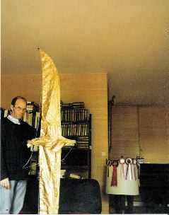
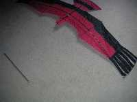

| Accueil | Jonathan | Autres pilotables | Oiseau Bleu | Harfang, Sterne | Oiseau Light | Cerfs-volants récents |

Jonathan a été mon premier oiseau, un pilotable, dans mes débuts tâtonnants. J'ai d'abord construit un modèle en couverture scotchée, pas très présentable, mais qui volait bien quoique un peu lentement. Il a fait ses premières armes à Bourges, à la fête du Cerf-Volant Club de France (CVCF).
Je l'ai ensuite fait évoluer et construit en spi, le milar étant trop fragile. Il m'a fallu pour cela acheter ma première machine à coudre (50 F aux puces) et me mettre à la couture. Il ne faut pas s'en faire une montagne, on s'en tire très bien rapidement, avec 2 sortes de points seulement.
La photo montre le palonnier raccordé comme sur le schéma de la page "Motivations" et qui reste la meilleure solution que j'aie trouvée pour piloter par déformation du cerf-volant, mème si elle n'est pas parfaite.

Ensuite, j'ai voulu faire un oiseau avec des rémiges en bout d'aile, mais moins d'envergure relative pour diminuer les problèmes de dérapage. J'ai pris pour modèle un aigle royal, c'est pourquoi je l'ai baptisé King.

Mon idée initiale était d'actionner chaque rémige avec une petite bride comme l'aile complète de Jonathan.
Mais c'était trop complexe à réaliser pour un résultat peut-être nul. Alors j'ai seulement repris le principe de Jonathan, en actionnant toutes les rémiges en bloc. C'était plus simple, mais quand même pas biblique, croyez-moi !
Voyez le plan dans l'article "Le King" .